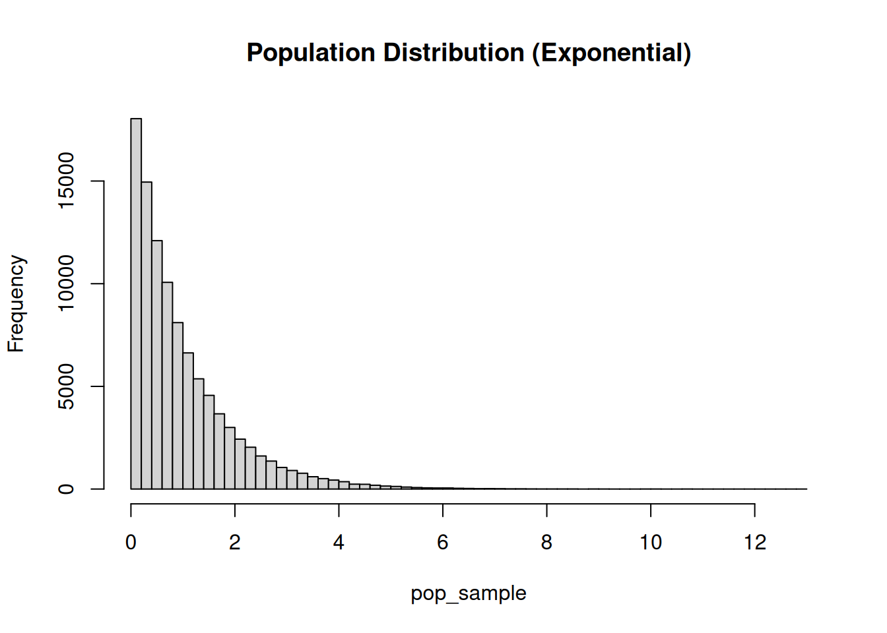
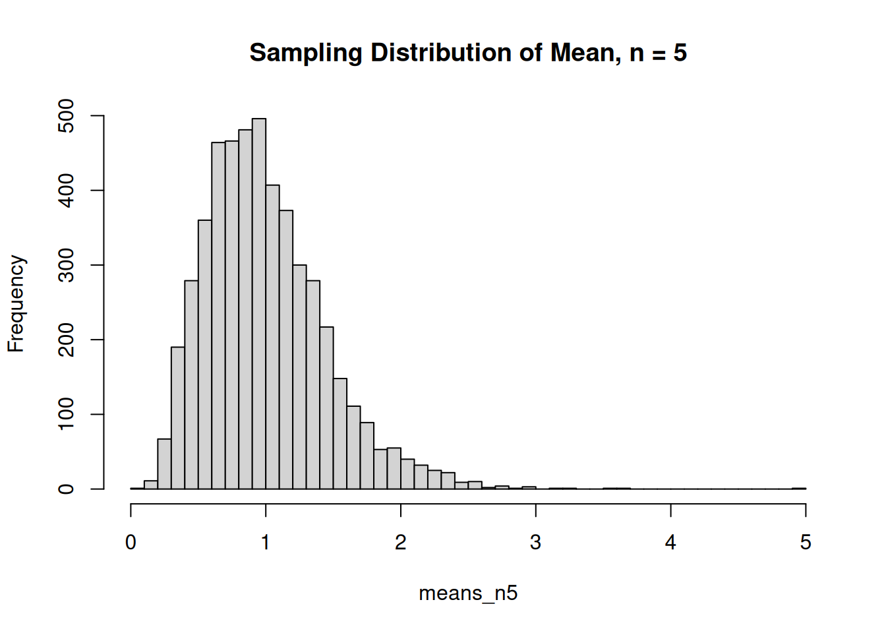
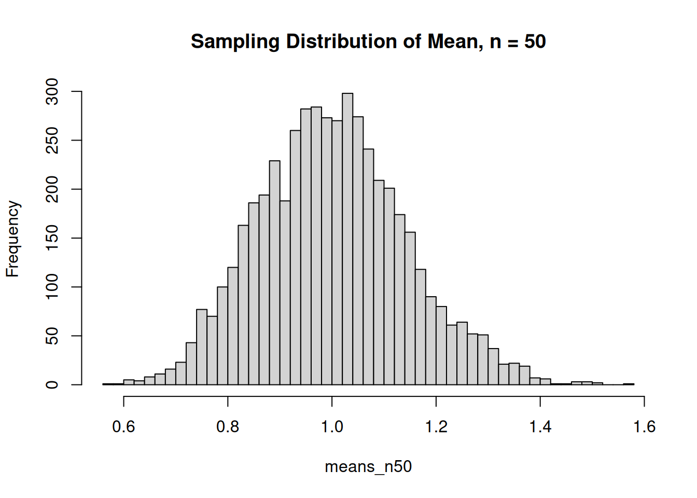

# Illustrative only -- the full exercise is in class.R
set.seed(2026)
sample1 <- rnorm(5, mean = 0, sd = 1)Lecture 10: Statistical Computing, Simulation, and Modeling
MATH 5200 – Computing Using R & Python
Central Question
How can computation help us understand randomness, estimation, and statistical procedures?
Last lecture, you learned to turn messy raw data into a trustworthy analysis dataset. Today we ask a different kind of question: once you have a number – an estimated mean, a regression coefficient, a proportion – how much should you trust it? Classical statistics answers this question with formulas derived under assumptions. Today we answer it a different way: by simulating the data-generating process many times and watching what happens.
This is not a replacement for mathematical statistics – it is a laboratory for understanding it. When we simulate 10,000 samples from a known population and compute the sample mean each time, we are not proving a theorem; we are directly observing the behavior that the Central Limit Theorem describes. Simulation lets you build intuition for ideas like bias, variance, confidence interval coverage, and statistical power by literally watching them happen, under conditions you fully control – including conditions (small samples, non-normal data, outliers) where the classical formulas start to break down.
We will work with a simple financial risk example throughout: daily stock returns, modeled as random draws from a probability distribution. By the end of class, you will have built your own small “statistical laboratory” – a simulation that lets you investigate estimator behavior under conditions you design yourself.
1. Quiz
Before we begin, complete the short quiz covering Lecture 9 (tidyverse data wrangling and validation). It should take about 10 minutes.
Exercise 1: Randomness and Reproducibility
Exercise 1.1: Pseudorandom Generation and Seeds
You used set.seed() and rnorm() briefly in Lecture 8. Today we use them as serious scientific tools, not just convenient examples.
See Exercise 1.1 in
class.R.
What “Pseudorandom” Actually Means
Computers cannot generate truly random numbers; they generate pseudorandom sequences from a deterministic algorithm, seeded with a starting value. The same seed always produces the same sequence – which is a feature, not a limitation, for reproducible science.
set.seed(1)
rnorm(3)[1] -0.6264538 0.1836433 -0.8356286set.seed(1)
rnorm(3) # identical to the previous call[1] -0.6264538 0.1836433 -0.8356286set.seed(2)
rnorm(3) # a different seed produces a different sequence[1] -0.8969145 0.1848492 1.5878453
ImportantReproducibility Requires Recording the Seed
A simulation result without a recorded seed is not fully reproducible – a colleague (or you, in six months) cannot regenerate your exact numbers. Always call set.seed() explicitly, and record which seed you used, directly in your script or report.
Exercise 1.2: Independent Repetitions
The basic unit of simulation is: generate one sample, compute a statistic, repeat many times.
# Illustrative only -- the full exercise is in class.R
one_sample <- rnorm(30, mean = 0.001, sd = 0.02)
mean(one_sample)See Exercise 1.2 in
class.R.
Exercise 2: Monte Carlo Reasoning
Exercise 2.1: A Monte Carlo Approximation
Suppose we want to know the probability that a daily return falls below -3%, assuming returns are normally distributed with mean 0.001 and sd 0.02. We can compute this exactly with pnorm(), but we can also approximate it by simulation – a technique that generalizes to situations with no exact formula.
# Illustrative only -- the full exercise is in class.R
exact <- pnorm(-0.03, mean = 0.001, sd = 0.02)
simulated_draws <- rnorm(100000, mean = 0.001, sd = 0.02)
monte_carlo_estimate <- mean(simulated_draws < -0.03)See Exercise 2.1 in
class.R.
Monte Carlo Standard Error
A Monte Carlo estimate is itself a random quantity – it will differ slightly every time you rerun the simulation (unless you fix the seed). Its precision improves with the number of simulations, at a predictable rate.
set.seed(42)
draws <- rnorm(1000, mean = 0.001, sd = 0.02)
p_hat <- mean(draws < -0.03)
mc_se <- sqrt(p_hat * (1 - p_hat) / length(draws))
p_hat[1] 0.066mc_se[1] 0.007851369
ImportantMonte Carlo Error Shrinks with sqrt(n), Not n
Quadrupling the number of simulations only halves the Monte Carlo standard error, since it scales with 1/sqrt(n_simulations). Going from “roughly right” to “very precise” is expensive. Always report, or at least think about, the Monte Carlo error alongside a simulation-based estimate – an estimate with no sense of its own precision is not very useful.
Exercise 2.2: Convergence with Simulation Size
# Illustrative only -- the full exercise is in class.R
sim_sizes <- c(10, 100, 1000, 10000, 100000)
# For each size, estimate P(return < -3%) and see how the estimate stabilizesSee Exercise 2.2 in
class.R.
Exercise 3: Sampling Distributions
Exercise 3.1: The Sampling Distribution of the Mean
A sampling distribution describes how a statistic (like the sample mean) varies across repeated samples from the same population. We build one directly by simulation.
# Illustrative only -- the full exercise is in class.R
n_sims <- 5000
sample_means <- numeric(n_sims)
# Fill sample_means by repeatedly drawing a sample and computing its meanSee Exercise 3.1 in
class.R.
The Central Limit Theorem, Observed
The Central Limit Theorem (CLT) says the sampling distribution of the mean approaches a normal distribution as sample size grows, regardless of the population’s shape. We do not need to take this on faith – we can watch it happen.
set.seed(7)
# Population is heavily skewed (exponential), not normal at all
pop_sample <- rexp(100000, rate = 1)
hist(pop_sample, breaks = 50, main = "Population Distribution (Exponential)")
# Sampling distribution of the mean, n = 5 per sample
means_n5 <- sapply(1:5000, function(i) mean(rexp(5, rate = 1)))
hist(means_n5, breaks = 50, main = "Sampling Distribution of Mean, n = 5")
# Sampling distribution of the mean, n = 50 per sample
means_n50 <- sapply(1:5000, function(i) mean(rexp(50, rate = 1)))
hist(means_n50, breaks = 50, main = "Sampling Distribution of Mean, n = 50")
TipWhat to Notice
The population itself is strongly right-skewed. The sampling distribution of the mean at n = 5 is still somewhat skewed. By n = 50, it looks approximately normal, bell-shaped and symmetric, even though the underlying population never was. This is the CLT, observed directly rather than proven abstractly.
Exercise 3.2: Effect of Sample Size on Variance
# Illustrative only -- the full exercise is in class.R
sd(means_n5)
sd(means_n50)
# Compare to the theoretical standard error: population sd / sqrt(n)See Exercise 3.2 in
class.R.
Exercise 4: Statistical Inference via Simulation
Exercise 4.1: Confidence Interval Coverage
A 95% confidence interval is supposed to contain the true parameter in 95% of repeated samples. This is a claim about long-run frequency, and we can check it directly, something that is impossible with a single real dataset.
# Illustrative only -- the full exercise is in class.R
true_mean <- 0.001
true_sd <- 0.02
n <- 30
one_ci <- function() {
sample_data <- rnorm(n, mean = true_mean, sd = true_sd)
se <- sd(sample_data) / sqrt(n)
m <- mean(sample_data)
c(lower = m - 1.96 * se, upper = m + 1.96 * se)
}See Exercise 4.1 in
class.R.
Type I and Type II Error Through Simulation
A Type I error is rejecting a true null hypothesis; a Type II error is failing to reject a false one. Both are frequencies we can estimate directly by simulation.
set.seed(99)
# Simulate under a TRUE null (mean = 0): how often does a t-test
# incorrectly reject at alpha = 0.05?
false_positives <- sapply(1:2000, function(i) {
sample_data <- rnorm(30, mean = 0, sd = 0.02)
t.test(sample_data, mu = 0)$p.value < 0.05
})
mean(false_positives) # should be close to 0.05[1] 0.0495
NotePower Is Just the Flip Side
Statistical power is the probability of correctly rejecting a false null hypothesis – i.e., 1 minus the Type II error rate. We estimate it the same way, but simulating under an alternative (a true, nonzero effect) instead of the null.
Exercise 4.2: Statistical Power
# Illustrative only -- the full exercise is in class.R
# Simulate under a TRUE alternative (mean = 0.005, a small but real effect):
# what fraction of simulated t-tests correctly reject?See Exercise 4.2 in
class.R.
Exercise 5: Regression
Exercise 5.1: Fitting a Simple Linear Model
Regression lets us ask how one variable relates to another. In R, this is remarkably concise.
# Illustrative only -- the full exercise is in class.R
model <- lm(y ~ x, data = df)
summary(model)See Exercise 5.1 in
class.R.
Reading lm() Output
set.seed(5)
x <- runif(50, 0, 10)
y <- 2 + 0.5 * x + rnorm(50, sd = 1)
df_demo <- data.frame(x = x, y = y)
model_demo <- lm(y ~ x, data = df_demo)
summary(model_demo)
Call:
lm(formula = y ~ x, data = df_demo)
Residuals:
Min 1Q Median 3Q Max
-1.9564 -0.6119 -0.1489 0.6814 2.0019
Coefficients:
Estimate Std. Error t value Pr(>|t|)
(Intercept) 1.70650 0.27686 6.164 1.41e-07 ***
x 0.56276 0.04847 11.610 1.53e-15 ***
---
Signif. codes: 0 '***' 0.001 '**' 0.01 '*' 0.05 '.' 0.1 ' ' 1
Residual standard error: 0.9842 on 48 degrees of freedom
Multiple R-squared: 0.7374, Adjusted R-squared: 0.7319
F-statistic: 134.8 on 1 and 48 DF, p-value: 1.532e-15Key pieces of the output: the Estimate column gives the fitted intercept and slope; Std. Error quantifies uncertainty in each estimate (directly analogous to the Monte Carlo and sampling-distribution ideas from earlier in this lecture); the p-value tests whether each coefficient differs from zero; R-squared summarizes the proportion of variance in y explained by x.
coef(model_demo) # just the estimated coefficients(Intercept) x
1.7065044 0.5627559 residuals(model_demo) |> head() # observed minus fitted, for the first few rows 1 2 3 4 5 6
-0.1256325 1.2820699 1.2168762 -0.5420638 -0.6249739 0.1694561
ImportantRegression Coefficients Are Estimates, Not Facts
A fitted slope of 0.5 is a single number computed from one sample. If we resampled the data (as we did throughout this lecture), we would get a slightly different slope each time. The standard error reported by lm() is estimating exactly the kind of sampling variability we spent the whole lecture simulating directly.
Exercise 5.2: Residuals and Model Assumptions
# Illustrative only -- the full exercise is in class.R
plot(model$fitted.values, resid(model))
abline(h = 0, col = "red")See Exercise 5.2 in
class.R.
Exercise 6: Major Investigation – Simulation as a Statistical Laboratory
Working with a data-generating process for daily stock returns, you will design and run a small simulation study investigating estimator bias, sampling variance, confidence interval coverage, the effect of sample size, and the effect of non-normality (heavy tails / outliers) – while tracking Monte Carlo error throughout.
# Illustrative only -- the full exercise is in class.R
# Compare CI coverage under normal returns versus heavy-tailed returns
# (e.g., using rt() with a small degrees-of-freedom to generate outliers)See Exercise 6.1 in
class.R.
TipSimulation Is Not Proof
A simulation under one set of assumptions tells you about behavior under those assumptions, nothing more. Changing the data-generating process (different sample size, different distribution) can completely change your conclusion. This is a feature: it lets you map out exactly where a classical method starts to fail, something a single formula cannot show you.
Looking Ahead
Today’s simulations produced numbers, histograms, and model summaries – but we viewed almost everything using base R’s quick-and-dirty hist() and plot(). Next lecture, we learn to build genuinely clear, publication-quality figures with ggplot2, and to combine code, figures, and narrative into a single reproducible Quarto report. The simulation output from today is exactly the kind of material a good figure needs to communicate; next lecture is about doing that communication well.
NoteHomework Preview
Tonight’s homework is a simulation-based statistical investigation: you will design a data-generating process, simulate under multiple experimental conditions, graphically examine your simulation results, and interpret what you find.